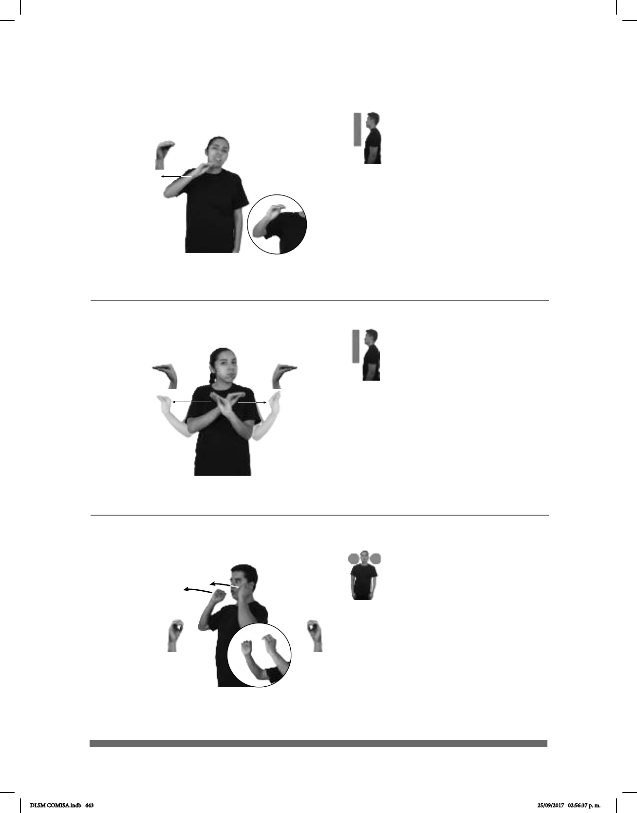

443
Seña: SS
O.1
Las palmas se
encuentran frente a frente.
A la altura de las mejillas.
Movimiento: Recto hacia el frente.
Ceño fruncido
y labios protuidos.
v. tr. No haber visto a
alguien en mucho tiempo.
(O-48)
___________neg_
NAVIDAD ÚLTIMA pro-DOS-DE-NOSOTROS NO-TE-HE-VISTO
No te he visto desde la última navidad.
Seña: SS
O.4
Palmas oblicuas hacia
fuera y hacia los lados.
A la altura del pecho, las
manos cruzadas.
Movimiento: Las manos parten de un
mismo punto y luego se abren hacia los
lados.
Rotación de
cabeza, ojos semicerrados, mejillas
v. imp. No haber alguien en
algún lugar.
__________neg_
DOMINGOS++ pos-MI CASA NO-HAY-NADIE
No hay nadie en mi casa los domingos.
(O-47) No hay nadie
Seña: SM
O.5
Palma hacia la
izquierda.
A la altura de la bar-
billa.
Movimiento: Recto hacia la
derecha.
Cabeza
ladeada, ceño fruncido, boca abierta
mostrando los dientes.
loc. verb. Pasar por alto
a propósito o no prestarle atención
a una cosa o a una persona.
(O-46) No hacer caso
dm-LUIS pos-SUYO
derecha
ABUELA CONSEJO HACER-CASO
Luis no hace caso a los consejos de su abuela.
DLSM COMISA.indb 443 25/09/2017 02:56:37 p. m.